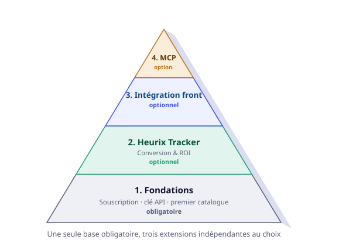

Guide de mise en route — de la souscription à l'installation complète
Trois étapes pour avoir une recherche qui fonctionne. Puis trois modules indépendants, à activer selon vos besoins — aucun n'est obligatoire pour que le moteur réponde à vos clients.

Étape 1 — Souscrivez
Choisissez un plan sur la page tarifs — l'essai de 14 jours ne demande pas de carte bancaire. À la fin de la souscription, votre clé API (hx_...) est immédiatement disponible dans votre console, section « Mes infos ».
[Capture d'écran à ajouter : la clé API affichée dans la console, section Mes infos]
Étape 2 — Indexez votre premier catalogue
Un seul appel suffit — le catalogue se crée automatiquement au premier import, pas de configuration préalable :
curl -X POST https://api.heurix.fr/v1/index/moncatalogue/items \
-H "Authorization: Bearer VOTRE_CLE_API" \
-H "Content-Type: application/json" \
-d '{
"items": [
{"id": "sku-1", "name": "Perceuse GDX 18V-285 BOSCH", "ref": "M8 x 20 - Inox A2", "stock": 8, "price": 139.90}
]
}'Précisez "rulepack": "outillage" dans le corps de la requête si votre secteur correspond à l'un des six packs de règles pré-configurés — sinon, le moteur indexe quand même, avec une reconnaissance de structure plus limitée tant qu'aucun pack ou Custom Rule n'est actif.
Étape 3 — Confirmez que la recherche fonctionne
curl -X POST https://api.heurix.fr/v1/index/moncatalogue/search \
-H "Authorization: Bearer VOTRE_CLE_API" \
-H "Content-Type: application/json" \
-d '{"q": "perceuse bosch"}'Une réponse avec votre produit dans hits confirme que tout fonctionne. À ce stade, la recherche est pleinement opérationnelle — tout ce qui suit est optionnel.
[Capture d'écran à ajouter : le tableau de bord "Vue d'ensemble" de la console une fois le premier catalogue indexé]
À partir d'ici, trois modules indépendants
Chacun répond à un besoin différent. Activez ce qui vous concerne, ignorez le reste — rien n'est requis pour les deux autres, et rien n'est requis pour que la recherche elle-même continue de fonctionner.
Module optionnel — Heurix Tracker (Conversion & ROI)
Pour savoir quelles recherches génèrent réellement des ventes, pas seulement des clics. Téléchargez heurix-tracker.js, éditez les deux variables en tête de fichier avec votre clé et votre catalogue :
var HEURIX_API_KEY = "VOTRE_CLE_API";
var HEURIX_CATALOG = "moncatalogue";Puis posez le script une seule fois, site-wide :
<script src="heurix-tracker.js"></script>Appelez ensuite Heurix.trackClick(query, productId) sur un clic depuis vos résultats de recherche, et Heurix.trackPurchase([{id, amount, margin}]) à la confirmation d'une commande — détail complet dans la documentation Conversion & ROI.
[Capture d'écran à ajouter : le pavé Conversion & ROI de la console avec de premières données]
Module optionnel — Intégration front-end
Deux façons d'afficher une recherche sur votre site, selon votre situation :
Vous partez de zéro, pas de recherche existante — heurix-search.js, un script autonome qui affiche une barre de recherche complète (saisie, résultats, facettes) en trois lignes :
<div id="ma-recherche"></div>
<script src="heurix-search.js"></script>
<script>
Heurix.searchBox({ apiKey: "VOTRE_CLE_API", catalog: "moncatalogue", containerId: "ma-recherche" });
</script>Vous avez déjà une interface, ou une stack JS/TS établie — @heurix/client, un client léger pour construire votre propre interface :
npm install @heurix/clientimport { HeurixClient } from "@heurix/client";
const client = new HeurixClient({ apiKey: "VOTRE_CLE_API", catalog: "moncatalogue" });
const results = await client.search("perceuse bosch");Détail complet des deux options : heurix-search.js et la référence API pour construire votre propre appel.
[Capture d'écran à ajouter : heurix-search.js en action sur une page de test, résultats affichés]
Module optionnel — Serveur MCP (agents IA)
Pour qu'un agent IA (Claude Desktop, Cursor, un agent interne) interroge votre catalogue en langage naturel, sans jamais appeler l'API lui-même. Guide complet, installation pas à pas incluse : Connecter Heurix à Claude Desktop et Cursor.
Et ensuite
Une fois ces bases posées, la documentation complète couvre le reste — synonymes, facettes, Browse & Discovery, priorités de requête. Rien de tout ça n'est nécessaire pour démarrer, mais tout est disponible dès que vous en avez besoin.